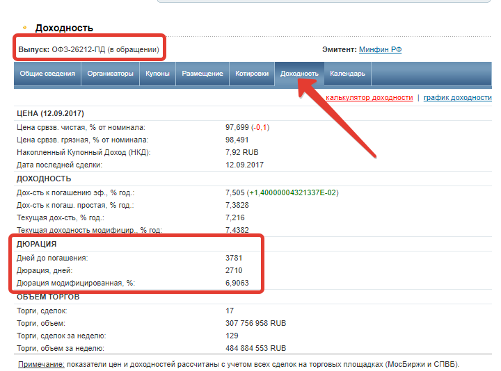
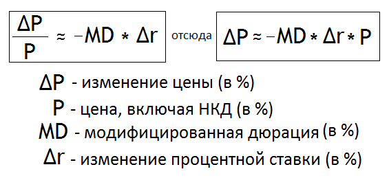
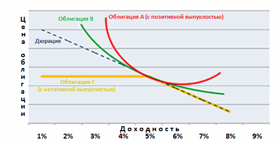

Общий смысл дюрации заключается в периоде времени, через который владелец облигации может вернуть свои вложения обратно. Обычно расчет происходит в годах, но на российском рынке его ведут в днях.
Например.Чем меньше параметр дюрации по долговой бумаге, тем меньше рисков несет инвестор.
Сама формула настолько запутана и сложна, что знать ее обычному инвестору ни к чему. Ну а производить расчеты по этой формуле по каждой облигации просто нереально. Да и не зачем. Обычно в торговом терминале уже есть подобные данные, готовые и рассчитанные автоматически по каждой ценной бумаги.
Другой вариант узнать дюрацию — это информация на специализированных сайтах. Тот же rusbonds.ru вам в помощь.
На сайте нужно выбрать любую облигацию в обращении. Во вкладке «доходность» есть вся необходимая информация.

Как правило, для каждого увеличения или уменьшения процентных ставок на 1%, цена облигации изменится примерно 1% в противоположном направлении за каждый год срока.
Вот, как это работает:
Повысили ставку на 1%: а) Облигации с дюрацией 2 упадут на 2%. б) Облигации с дюрацией 5 упадут на 5%. в) Облигации с дюрацией 10 упадут на 10%.
Понизили ставку на 2%: а) Облигации с дюрацией 2 вырастут на 4%. б) Облигации с дюрацией 5 вырастут на 10%. в) Облигации с дюрацией 10 вырастут на 20%.
Модифицированная дюрация это числовой показатель, отражающий ту величину, на которую изменится цена облигации при изменении рыночной доходности (и, как следствие, доходности к погашению). Что это означает? Всем известен следующий закон рынка облигаций: если ключевая процентная ставка растет, то цена на облигацию снижается (и наоборот, когда ставка падает, цена облигации вырастает).
Но вот на сколько именно вырастет или упадет стоимость облигации, если ключевая ставка изменится на 1%? Как раз на этот вопрос дает ответ модифицированная дюрация, она показывает точное значение, на которое изменится цена облигации при изменении рыночной процентной ставки.
Модифицированная дюрация напрямую зависит от обычной дюрации. Формула по которой расчитывается модифицированая дюрация не несет практической ценности для рядового инвестора, ведь данный показатель рассчитывается автоматически и показывается на любом информационном ресурсе, посвященном облигациям.
Представим ситуацию, вы купили облигацию по цене 98% с доходностью 12%, нулевым НКД и модифицированной дюрацией 5. После покупки облигации доходность 12% фиксируется, т.е. если продержать данную бумагу до погашения, то вы все равно получите ту доходность, по которой ее покупали, что бы ни происходило на рынке.
Но если вы захотите выйти раньше (т.е. продать облигацию до даты погашения), то делать это придется по рыночной цене, которая будет иметь место в день предполагаемой продажи. А вот рыночная стоимость в день продажи может быть не 98%, а другой, т.к. она меняется исходя из рыночной доходности (под рыночной доходностью подразумевается ключевая процентная ставка).
Итак, МД = 5, цена облигации 98%, доходность 12%. На сколько изменится цена в случае снижения доходности с 12% до 10,5% (т.е. на -1,5%). Для точного расчета данного значения будет применяться следующее равенство – смотри рисунок ниже.

Почему в формуле стоит знак «примерно равно»? Потому что расчет ведется для облигаций с низкой (т.е. позитивной) выпуклостью. Если выпусклость будет высокой (т.е. негативной), то вышеприведенная формула даст значительную погрешность. Негативная выпуклость означает, что при сильном изменении рыночных процентных ставок стоимость облигаций будет сильнее падать и слабее расти. Отсюда следует, что МД не подходит для облигаций с правом выкупа и с высокими ставками.
Получается, при условии снижения среднерыночной доходности на -1,5%, т.е. с 12% до 10,5%, стоимость данной облигации вырастет на +7,35% = (98%*(-5%)*(-1,5%))/100% и составит 105,35% (98%+7,35%). Таким путем вы можете вычислить, насколько изменится стоимость ваших инвестиций по сравнению с их сегодняшней стоимостью, если ключевая процентная ставка вырастет или упадет.
Выпуклость облигации - отражает меру чувствительности дюрации к изменению процентных ставок.
На рисунке ниже изображены 3 облигации с разной степенью выпуклости, а также пунктирной линией показан уровень дюрации. По вертикали графика отражена цена на облигацию, а по горизонтали – величина ключевой процентной ставки.

Мы находимся в точке 5%, т.е. рыночная доходность эквивалентна 5%, при этом у трех бумаг одинаковая цена, одинаковая дюрация, но разная степень выпуклости. По графику становится понятно, что дюрация предполагает линейное изменение цены относительно изменившейся доходности, но на самом деле ценообразование на рынке облигаций оно выпуклое!
Поэтому в случае изменения ставки доходности на 1%, максимум на 1,5% дюрация покажет корректное значение, но вот если доходность изменится процента на три-четыре и выше, то здесь она ошибётся. При сильном изменении доходности нужно анализировать выпуклость облигации, потому что именно этот параметр покажет истинную картину.
Для облигаций без права досрочного погашения «выпуклость» всегда является положительной, поскольку изменение доходности не влияет на выплаты по облигациям. Однако, если это облигация с правом досрочного погашения, то выплаты изменяются. В этом случае дюрация уменьшается с возрастанием доходности, в результате чего возникает негативная «выпуклость»
В основном данный параметр применяется профессиональными управляющими, в активах которых не меньше миллиарда рублей. На уровне частного инвестора хватает просто дюрации! Смотря на дюрацию вы понимаете, что чем она выше, значит тем волатильнее бумага.